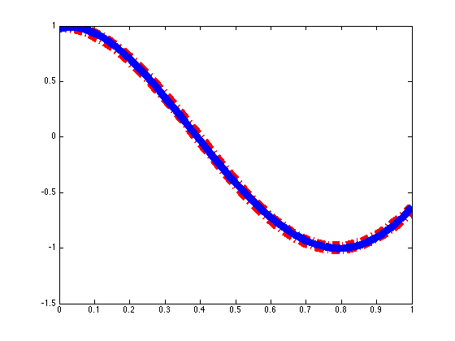
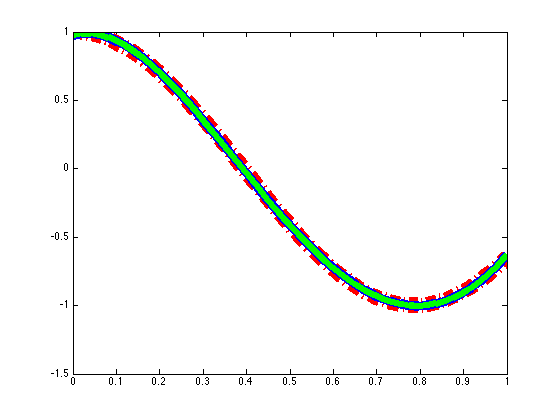
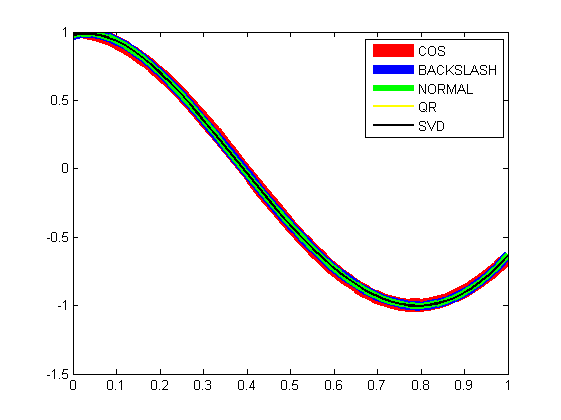
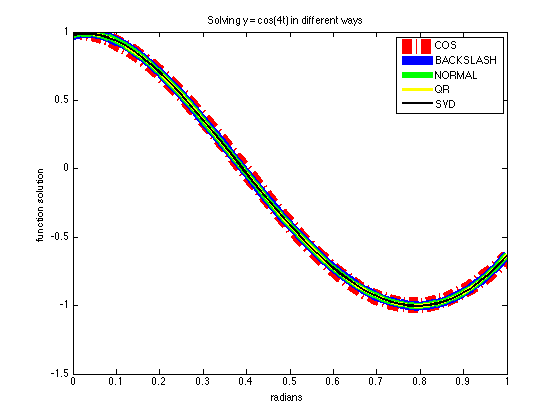
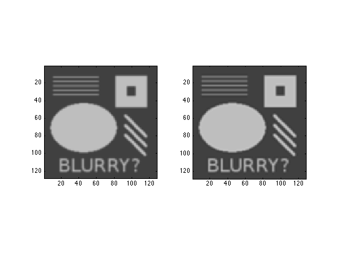
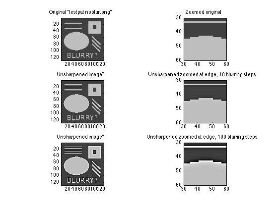
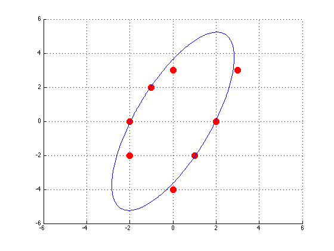

Contents
Problem 2
I create a 0-1 matrix with 50 columns, turn it into a vandermonde matrix where all the values previously in the columns 1-50 now are in column 2, rows 1-50, with the rest of the columns formatted according to the vandermonde matrix.
m = 50 n = 5
m =
50
n =
5
Creating t, the 0-1 vector with m spaces.
t = linspace(0,1,m)';
Creating a vandermonde matrix (the right way around with fliplr)
A = fliplr(vander(t));
Removing the entries after the fifth row - we don't want the higher powers)
n2 = n + 1 A(:,n2:end)=[]; b = cos(4*t);
n2 =
6
What does cos(4t) look like?
COS = plot(t,b,'r-.'); set(COS,'LineWidth',15); hold on

Solving by Matlab's backslash command
xx(:,1) = A\b; BACKS = plot(t,A*xx(:,1),'b'); set(BACKS,'LineWidth',9);
Finding the normal equations by multiplying with the transpose of A on both sides -> A^T * A * x = A^T * b. Rearranging:
xx(:,2) = (A'*A)\(A'*b);
Plotting the normal equations solution:
NORMAL = plot(t,A*xx(:,2),'g'); set(NORMAL,'LineWidth',6);
Finding the solution by QR factorisation:
[Q,R] = qr(A); xx(:,3) = R\Q'*b;
Plotting the qr solution:
QR = plot(t,A*xx(:,3),'y') set(QR,'LineWidth',3)
QR =
1.820924072265625e+02
 Finding the solution by svd:
[U,S,V] = svd(A,0);
Simplifying for later:
G = U * S * V';
Solving for svd
xx(:,4) = (G'*G)\(G'*b);
Plotting the svd solution, adding pretty things:
SVD = plot(t,A*xx(:,4),'black'); set(SVD,'LineWidth',2) legend('COS','BACKSLASH','NORMAL','QR','SVD') title('Solving y = cos(4t) in different ways') xlabel('radians'); ylabel('function solution') hold off
Solutions of x:
xx
xx = Columns 1 through 3 0.977651051050956 0.977651051050360 0.977651051050948 0.787296437030590 0.787296437042173 0.787296437030584 -13.726690028111138 -13.726690028160782 -13.726690028111079 14.993014653596203 14.993014653670262 14.993014653596113 -3.665759654743957 -3.665759654779711 -3.665759654743917 Column 4 0.977651051050924 0.787296437030878 -13.726690028111268 14.993014653595205 -3.665759654743045
Norms:
for c = 1:4 norm(A*xx(:,c)-b,2) end
ans = 0.061356756239887 ans = 0.061356756239888 ans = 0.061356756239887 ans = 0.061356756239888
Problem 3
for c = 1:4 Error(c) = cond(A*xx(:,c)); end
Problem 4
clear all % PART 1 type('readimg.m') [u] = readimg('testpat_blur2.png');
%% Code reads a square greyscale image, passes it to u
function [u] = readimg(imgstring)
u = imread(imgstring);
u = double(u) / 255;
[n,n2] = size(u);
if (n ~= n2)
error('by default, this only supports square images')
end
end
Build a discrete 2D Laplace operator
type('unsharpen.m') unsharp = unsharpen(u,10); % Apply image unsharp mask figure(1); clf; % Clears figure for new images subplot(1,2,1), imagesc(u); type('greyimg.m') greyimg(); subplot(1,2,2), imagesc(unsharp); greyimg();
%% Code creates a blurry mask, subtracts it from image u % to find the difference, then adds the % difference to the image in order to sharpen it. function [unsharp] = unsharpen(u,iterations) [n,n2] = size(u); e = ones(n,1); L1 = spdiags([e -2*e e], [-1 0 1], n, n); L1(1,1) = -1; L1(end,end) = -1; I = speye(n,n); L = kron(L1, I) + kron(I, L1); v = reshape(u, n*n, 1); for i=1:iterations v = v + 0.01*(L*v); end ublur = reshape(v, n, n); %% % This changes a blurring function to a unsharp mask. edgemap = u - ublur; unsharp = u + edgemap; end %% Code formats images the way I want them function [] = greyimg() caxis([0 1]) colormap(gray) axis equal, axis tight end
Image becomes blurred!
PART 2
[u] = readimg('testpat_noblur.png'); % Read image from file unsharp = unsharpen(u,10); % Apply image unsharp mask figure(1); clf; % Clears figure for new images
Plots full size and zoomed versions of original image, 10 step blurring and 100 step blurring.
subplot(3,2,1), imagesc(u); greyimg(); title('Original "testpat noblur.png"') subplot(3,2,2), imagesc(u); greyimg(); axis([30 60 30 60]) title('Zoomed original') subplot(3,2,3), imagesc(unsharp); greyimg(); title('Unsharpened image"') subplot(3,2,4), imagesc(unsharp); greyimg(); axis([30 60 30 60]) title('Unsharpened zoomed at edge, 10 blurring steps') unsharp100 = unsharpen(u,100); subplot(3,2,5), imagesc(unsharp100); greyimg(); title('Unsharpened image"') subplot(3,2,6), imagesc(unsharp100); greyimg(); axis([30 60 30 60]) title('Unsharpened zoomed at edge, 100 blurring steps') hold off
The sharpening of the image enhances the contrast between points that are already contrasting. For a unblurred image, this ramps up the "whiteness" of the image to the point of making it "grainy", as can be seen on the zoomed plot of the 100 stepped blurring image.
Problem 5
What is the data we want to fit against?
xx = [3,1,0,-1,-2,0,-2,2]' yy = [3,-2,3,2,-2,-4,0,0]' % Having a look: figure(2); scatter(xx,yy,100,'r','filled') axis([-6,6,-6,6]) hold on type('ellipse.m') [b,c,d] = ellipse(xx,yy); grid on [b,c,d] = ellipse(xx,yy); ellipseplot(b,c,d);
xx =
3
1
0
-1
-2
0
-2
2
yy =
3
-2
3
2
-2
-4
0
0
function [b,c,d] = ellipse(x,y)
format long
A(:,1) = x.^2;
A(:,2) = x.*y;
A(:,3) = y.^2;
B = ones(length(x),1);
X = A\B
b = X(1)
c = X(2)
d = X(3)
end
X =
0.257358001450461
-0.200536979030043
0.075581341521749
b =
0.257358001450461
c =
-0.200536979030043
d =
0.075581341521749
X =
0.257358001450461
-0.200536979030043
0.075581341521749
b =
0.257358001450461
c =
-0.200536979030043
d =
0.075581341521749
ac =
1.820287367198024
bc =
5.666950483095532
 figure(3); axis([-3 3 -3 3]), axis manual, hold on, grid on x = []; y = []; button = 1; disp('input points with mouse, button >= 2 for final point') while button == 1 [xx,yy,button] = ginput(1) x = [x; xx]; y = [y; yy]; plot(xx,yy,'x') end [b,c,d] = ellipse(x,y) ellipseplot(b,c,d); clear all
input points with mouse, button >= 2 for final point
xx =
-0.380184331797235
yy =
1.605263157894737
button =
1
xx =
-1.472350230414746
yy =
0.114035087719298
button =
1
xx =
-0.504608294930875
yy =
-1.429824561403509
button =
1
xx =
0.656682027649770
yy =
-0.622807017543860
button =
1
xx =
0.559907834101383
yy =
1.096491228070176
button =
3
X =
0.529427425163086
0.049320791529590
0.436935458563534
b =
0.529427425163086
c =
0.049320791529590
d =
0.436935458563534
b =
0.529427425163086
c =
0.049320791529590
d =
0.436935458563534
ac =
1.366416557677757
bc =
1.523619893793862